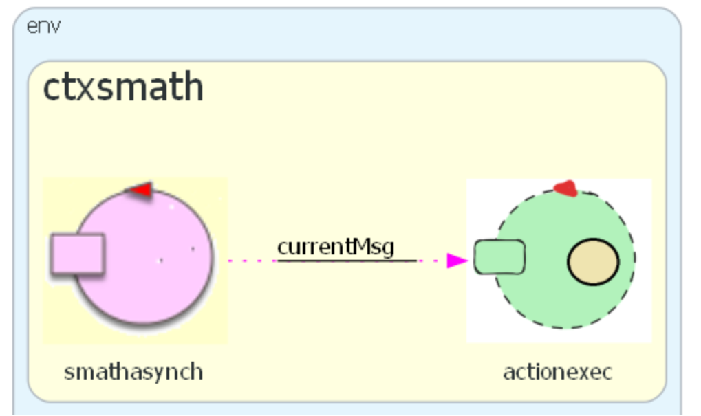
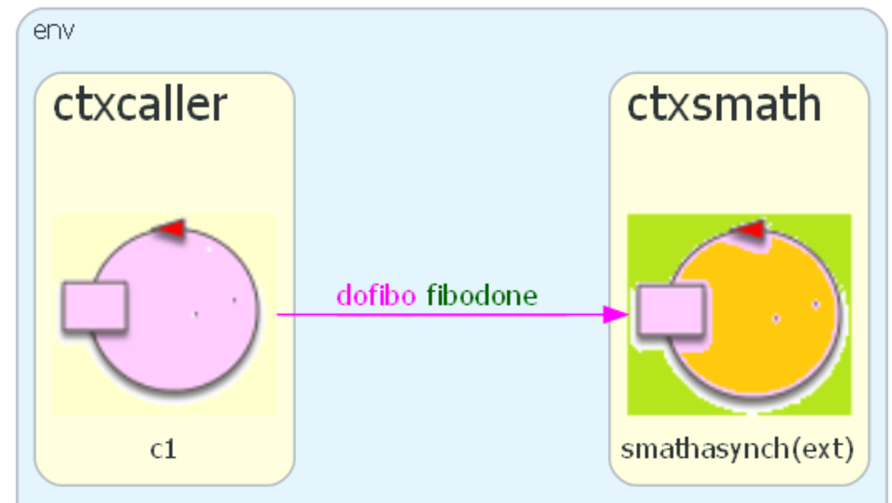

ServiceMath24Asynch¶
ServiceMath24Asynch Introduction¶
This is an update of the project described in ServiceMath24Synch. The main difference is that the service is now asynchronous.
The behavior of a system composed by the service smath24asynch
and some caller, can be :
a caller is not constrained to block, waiting for the answer
the service elaborates each request ‘in parallel’, by activating a new local process
SMath24Asynch-Requirements¶
The system smath24asynch must behave as follows:
Wait for a request for the calculation of the
Nth(N>=0) number of Fibonacci.Receive a request (from an external
Caller) for the calculation of a Fibonacci number.the calculation of the requested number to a (named
actionexec) dynamically activated.The
actionexecmust return to theCallerthe result of the calculation. :the name of the
Callerthe requested number
Nthe result
the time required for the calculation.
There is no requirement to include in the aswer the time when the request is handled by the service.
SMath24Asynch-Requirements analysis¶
The qak meta-model provides the primitve delegateCurrentMsgTo that performs two job:
create a new actor
delegate the current request to the new creted actor, that will directly respond to the
Caller
This allows us to immedialtely define an executable model that formally captures the requirements expressed in natural language.
SMath24Asynch-model from the Requirements¶
Model of the service (smath24asynch.qak)  |
Model of the system from the caller point of view (smath24asynchcaller.qak)  |
{kind=link}
{kind=link}
SMath24Asynch-Test plans¶
The SMath24Asynch-Requirements do introduce some User_story -> useful to define our test plans.
SMath24Asynch: a first test¶
:
The request: IApplMessage req =
CommUtils.buildRequest("tester","dofibo","dofibo(8)","smath");
|
expects the answer: fibodone(tester,8,34,...)
|
The test unit smath24asynchTest simulates a caller named tester that:
set a TCP-connection with
localhostat port8033sends the request
reqover the connection
This test activates the service by using (as done in PPS0-testUnit) the utility methods and . The last one, exploits the script smath24asynch.bat that activates the service deployed on the local machine.
SMath24Asynch: one caller test¶
: if I’m the caller of the service smath24asynch and I send two requests
fibo(41) and, afterwards, fibo(8), I expect to receive first the answer fibodone(8,)
and afterwards the answer fibodone(41,...) .
The test unit SmathasynchTestOneCaller exploits a model smath24asynchcaller.qak
that uses a POJO, instance of ObserverData.java, to check (method checkOneCallers()
the sequence of the answers .
The model smath24asynchcaller.qak includes:
The |

|
SMath24Asynch-Problem analysis¶
Our requirment analysis has already shown that we focus our attention on the internal view of the service, rather than on view of the system as perceived by the callers.
Moreoer, there is no requirement to include in the aswer the time when the request is handled by the service.
SMath24Asynch-Logical architecture¶
The model introduced in SMath24Asynch-model from the Requirements already captures the logical architecture of the system.
SMath24Asynch-Project¶
The function fun fibo(N:Int):Int that claculates the Nth number of Fibonacci
should be embedded into an object created by an utility class MathUtils.kt.
For an example, see helloworld3 withobj.
In our case
QActor smath context ctxsmath withobj math using "MathUtils.create()"
//The object math is an instance of MathUtils.kt: it can be used in the all the states of actor.
SMath24Asynch-Testing¶
Testing was already planned and discussed in the SMath24Asynch-Test plans.
SMath24Asynch-Deployment¶
The deployment process is, at the moment, quite similar to PPS0-A first Deployment.
As we can see from the script smath24asynch.bat, our deploy directory id now C:/DidatticRun
SMath24Asynch-Maintenance¶
We recall what said in Update the deployment.